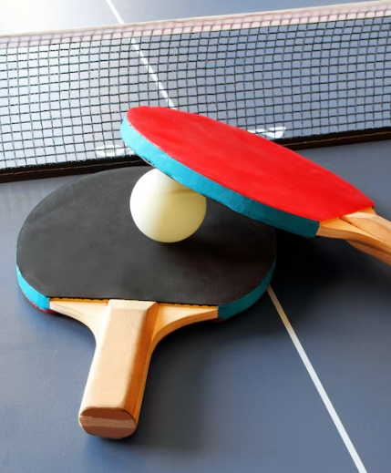
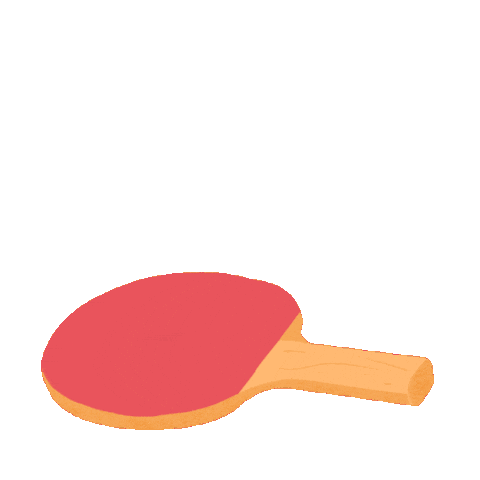

Ciekawostki


1. Tenis sto³owy, znany równie¿ jako ping-pong, jest jednym z najszybszych sportów na œwiecie.
2. Pocz¹tkowo gra³ siê na stole, a pi³eczki by³y wykonane z korka i gumy.
3. W 1901 roku James Gibb wprowadzi³ celuloidowe pi³eczki, które sta³y siê standardem.
4. Pi³eczki pingpongowe s¹ wype³nione gazem pod odpowiednim ciœnieniem, co wp³ywa na ich w³aœciwoœci.
5. Najlepsi gracze potrafi¹ pos³aæ pi³eczkê z prêdkoœci¹ ponad 150 km/h.
6. W 2000 roku pi³eczki powiêkszone zosta³y o 2 mm, co o 15% spowolni³o grê.
7. Mocno podkrêcona pi³eczka obraca siê szybciej ni¿ silnik na pe³nych obrotach sportowego samochodu.
Te ciekawostki pokazuj¹, jak fascynuj¹cy i dynamiczny jest tenis sto³owy, a tak¿e jak wiele istotnych informacji mo¿na znaleŸæ w jego historii i zasadach.
Nastêpna ciekawostka za: 10 s